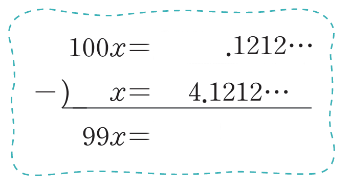

순환소수 \( 4.\dot{1}\dot{2} \)를 분수로 나타내시오.
▷ 빈칸에 들어갈 값을 입력해 보세요.
\( 4.\dot{1}\dot{2} \)를 \( x \)라고 하면 \(x=4.121212\cdots \)
\(······\,①\)
①의 양변에 100을 곱하면
\( 100x = \)
\( .121212\cdots \)
\(······\,②\)
412
②에서 ①을 변끼리 빼면
\( 99x =\)
408
\( , x = \;\; \)
\( \frac{136}{33} \)

412
408